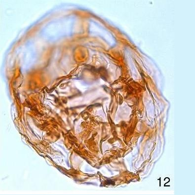
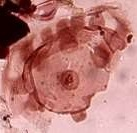

CYSTS LIST
- Alexandrium catenella
- Alexandrium kutnerae
- Alexandrium margalefi
- Alexandrium minutum
- Alexandrium peruvianum
- Alexandrium pseudogoniaulax
- Alexandrium tamarense
- Alexandrium taylori
- Alexandrium spp.
- Archaeperidinium bailongense, cyst of
- Archaeperidinium constrictum, cyst of
- Archaeperidinium minutum, cyst of
- Archaeperidinium monospinum, cyst of
- Archaeperidinium saanichi, cyst of
- Archaeperidinium sp., cyst of
- Ataxiodinium choane
- Ataxiodinium confussum
- Ataxiodinium zevenboomii
- Ataxiodinium sp.
- Biecheleria baltica
- Biecheleria cincta
- Biecheleria sp.
- Bitectatodinium spongium
- Bitectatodinium tepikiense
- Bitectatodinium sp.
- Brigantedinium assymmetricum
- Brigantedinium auranteum
- Brigantedinium cariacoense
- Brigantedinium majusculum
- Brigantedinium simplex
- Brigantedinium sp.
- Caspidinium rugosum
- Cryodinium matsuokai
- Cryodinium sp.
- Cryodinium meridianum
- Dalella chathamensis
- Diplopelta symmetrica, cyst of
- Dubridinium caperatum, cyst of
- Dubridinium cassiculum, cyst of
- Dubridinium cavatum, cyst of
- Dubridinium ulsterum, cyst of
- Dubridinium spp., cyst of
- Echinidinium aculeatum
- Echinidinium bispiniformum
- Echinidinium delicatum
- Echinidinium karaense
- Echinidinium granulatum
- Echinidinium sleipnerensis
- Echinidinium transparantum
- Echinidinium zonneveldiae
- Gymnodinium catenatum, cyst of
- Gymnodinium inusitatum, cyst of
- Gymnodinium microreticulatum, cyst of
- Gymnodinium nolerii, cyst of
- Gymnodinium trapeziforme, cyst of
- Impagidinium aculeatum
- Impagidinium caspienense
- Impagidinium pallidum
- Impagidinium paradoxum
- Impagidinium patulum
- Impagidinium plicatum
- Impagidinium sphaericum
- Impagidinium strialatum
- Impagidinium variaseptum
- Impagidinium velorum
- Islandinium brevispinosum
- Islandinium? cezare
- Islandinium minutum
- Leipokatium invisitatum
- Lejeunecysta acuminate
- Lejeunecysta adeliensis
- Lejeunecysta attenuata
- Lejeunecysta beinenensis
- Lejeunecysta catomus
- Lejeunecysta communis
- Lejeunecysta cowiei
- Lejeunecysta epidoma
- Lejeunecysta fallax
- Lejeunecysta globosa
- Lejeunecysta granosa
- Lejeunecysta hyalina
- Lejeunecysta katatonos
- Lejeunecysta lata
- Lejeunecysta marieae
- Lejeunecysta oliva
- Lejeunecysta paratenella
- Lejeunecysta pulchra
- Lejeunecysta rotunda
- Lejeunecysta sabrina
- Lejeunecysta sp.
- Lingulodinium machaerophorum
- Nematosphaeropsis labyrinthus
- Nematosphaeropsis lemniscata
- Nematosphaeropsis rigida
- Nematosphaeropsis scala
- Nematosphaeropsis spp.
- Nia acanthocysta
- Oblea acathocysta, cyst of
- Operculodinium aguinawense
- Operculodinium centrocarpum
- Operculodinium israelianum
- Operculodinium janduchenei
- Operculodinium longispinigerum
- Operculodinium piaseckii
- Operculodinium tegillatum
- Operculodinium microtriainum
- Operculodinium sp.
- Pentapharsodinium dalei
- Peridinium ponticum
- Polykrikos hatmannii, cyst of
- Polykrikos kofoidii, cyst of
- Polykrikos quadratus, cyst of
- Polykrikos schwartzii, cyst of
- Polykrikos sp., cyst of
- Polysphaeridium zoharyi
- Protoperidinium americanum, cyst of
- Protoperidinium biconicum, cyst of
- Protoperidinium conicoides, cyst of
- Protoperidinium denticulatum, cyst of
- Protoperidinium excentricum, cyst of
- Protoperidinium fukuyoi, cyst of
- Protoperidinium fuzhouense, cyst of
- Protoperidinium humile, cyst of
- Protoperidinium lattissimum, cyst of
- Protoperidinium lewisiae, cyst of
- Protoperidinium monospinum, cyst of
- Protoperidinium nudum, cyst of
- Protoperidinium parthenopes, cyst of
- Protoperidinium punctulatum, cyst of
- Protoperidinium stellatum, cyst of
- Protoperidinium thorianum, cyst of
- Protoperidinium thulensense, cyst of
- Protoperidinium tricingulatum, cyst of
- Pyxidinopsis braboi
- Pyxidinopsis psilata
- Pyxidinopsis reticulata
- Pyxidinopsis reticulata (okhotsk)
- Pyxidinopsis sp.
- Qia_lebouriae
- Quinquecuspis concreta
- Scrippsiella acuminata
- Scrippsiella crystallina
- Scrippsiella erinaceus
- Scrippsiella spinifera
- Scrippsiella triffida
- Scrippsiella trochoidea
- Selenopemphix antarctica
- Selenopemphix armageddonensis
- Selenopemphix brevispinosum
- Selenopemphix brinkhuisii
- Selenopemphix conspicua
- Selenopemphix coronata
- Selenopemphix crenata
- Selenopemphix dionaeacysta
- Selenopemphix islandensis
- Selenopemphix nephroides
- Selenopemphix quanta
- Selenopemphix tholus
- Selenopemphix undulata
- Selenopemphix sp.
- Spiniferites alaskensis
- Spiniferites asperulus
- Spiniferites belerius
- Spiniferites bentorii
- Spiniferites cruciformis
- Spiniferites delicatus
- Spiniferites elongatus
- Spiniferites frigidus
- Spiniferites hainanensis
- Spiniferites hyperacanthus
- Spiniferites lazus
- Spiniferites ludhamensis
- Spiniferites membranaceus
- Spiniferites mirabilis
- Spiniferites multisphaerus
- Spiniferites pachydermus
- Spiniferites pacificus
- Spiniferites ramosus
- Spiniferites spinatus
- Spiniferites splendidus
- Stelladinium abei
- Stelladinium bifurcatum
- Stelladinium denticulatum
- Stelladinium reidii
- Stelladinium robustum
- Stelladinium stellatum
- Stelladinium sp.
- Tectatodinium pellitum
- Trinovantedinium applanatum
- Trinovantedinium ferugnomatum
- Trinovantedinium glorianum
- Trinovantedinium harpagonium
- Trinovantedinium pallidifulvum
- Trinovantedinium variabile
- Trinovantedinium sp.
- Tuberculodinium vancampoae
- Votadinium bengalensis
- Votadinium calvum
- Votadinium concavum
- Votadinium elongatum
- Votadinium nanhaiense
- Votadinium pontifossatum
- Votadinium psilodora
- Votadinium reidii
- Votadinium rhomboideum
- Votadinium spinosum
- Xandarodinium xanthum
TUBERCULODINIUM VANCAMPOAE
Color: *Transparent. **Light brown to yellowish pigmented wall.
Surface: *Layers separated by processes.
Shape: *Spherical. **Flattened subspherical (discoidal).
Central body: **63 to 113 um. (diameter).
Process length: -
Process: *Randomly distributed spines/processes. Process barrel-shaped. Can be distally connected. **Numerous short, stout, hollow, barrel-shaped processes that appear circular in surface view. A variable number of processes can have flaring distal extremities that merge with the outer wall layer.
Archeopyle: *Combined archeopyle. **Polygonal with one long straight and approximately eight shorter sides. Epicystal.
Septa: -
Sulcus: -
Distiguishing characteristics: -
DESCRIPTION:
Flattened subspherical (discoidal) species with inner and outer light brown to yellowish pigmented wall layers separated by numerous short, stout, hollow, barrel-shaped processes that appear circular in surface view. A variable number of processes can have flaring distal extremities that merge with the outer wall layer. The archeopyle is polygonal with one long straight and approximately eight shorter sides, and is epicystal but not clearly related to the epithecal tabulation (Matsuoka et al., 1998). (Extracted from Van Nieuwenhove et al., 2020).
LOWEST STRATIGRAPHIC OCCURRENCE:
Lower Oligocene of the Mediterranean region (e.g., Brinkhuis and Biffi, 1993; Torricelli and Biffi, 2001) and North Atlantic (Damassa et al., 1990). Earlier records including the Lower Eocene of the North Sea Basin (Fechner and Mohr, 1988) and Upper Eocene of the North Atlantic and Mediterranean(Extracted from Van Nieuwenhove et al., 2020).
IMAGES:
| 1 | 2 | 3 |
 4 4 |
5 | 6 |
| 7 | 8 | 9 |
| 10 | 11 | 12 |
 13 13 |
14 | 15 |
| 16 |  17 17 |
18 |
 19 19 |
 20 20 |
21 |
| 22 |  23 23 |
 24 24 |
| 25 | 26 | 27 |
| 28 |
IMAGES REFERENCE:
1. Tuberculodinium vancampoae. Bright-field photomicrographs. Scale bar: 10 um. (Pospelova, 2005 - Plate II-4).
2. Tuberculodinium vancampoae. Bright-field photomicrographs. Apical surface. Scale bar: 10 um. (Pospelova, 2005 - Plate II-5).
3. Tuberculodinium vancampoae. Bright-field photomicrographs. Scale bar: 10 um. (Pospelova, 2005 - Plate II-6).
4. Tuberculodinium vancampoae. Bright-field photomicrographs. Scale bar: 10 um. (Pospelova, 2005 - Plate II-7).
5. Tuberculodinium vancampoae. Bright-field photomicrographs. Scale bar: 10 um. (Pospelova, 2005 - Plate II-8).
6. Tuberculodinium vancampoae. Dinoflagellate cysts identified in Barranca Final and Puerto Madryn Fms. Antapical view, high focus. Scale bar: 10 um. (Head, 1994 - Figure 5).
7. Tuberculodinium vancampoae. Morphological features of some dinoflagellate cysts. Scale bar: 10 um. (Yoon et al., 2014 - Plate II-9).
8. Tuberculodinium vancampoae. Antapical view, high focus. Scale bar: 10 um. (Fuentes, 2016).
9. Tuberculodinium vancampoae. Photomicrographs of autotrophic dinoflagellate cysts recorded from Jeju Island. Scale bar: 50 um. (Park et al., 2016 - Plate 1-12).
10. Tuberculodinium vancampoae. Orientation uncertain at upper focus. CBD: 92 um. (Al-Silwadi, 2016 - Plate 6-12).
11. Tuberculodinium vancampoae. Sample LA054, H10 (Correa, 2015 - Plate 2-10).
12. Tuberculodinium vancampoae. Assemblage of main dinoflagellate cysts described in the two shallow boreholes in Bingerville area. x1000. (Digbehi et al., 2011 - Plate 2-R).
13. Tuberculodinium vancampoae. Dinoflagellate cysts from the Dabaa Formation, Qattara Depression. All photomicrographs are in bright field illumination. Apical view (archeopyle in hypocyst) at middle and lower focus, CB maximum diameter 50 um. (Elbeialy, 2018 - Plate 4-3).
14. Tuberculodinium vancampoae. Dinoflagellate cysts from the Dabaa Formation, Qattara Depression. All photomicrographs are in bright field illumination. Apical view (archeopyle in hypocyst) at middle and lower focus, CB maximum diameter 50 um. (Elbeialy, 2018 - Plate 4-4).
15. Tuberculodinium vancampoae. Photomicrographs of temperature sensitive dinocyst species. Scale bar: 20 um. Sample WP87, Tapes Zone (Verhoeven & Louwye, 2011 - Plate 3-A).
16. Tuberculodinium vancampoae. Wall antapical view of antapex, sample R3341D, Old Church Formation upper Oligocene (USGS, 1989 - Plate 5-12).
17. Tuberculodinium vancampoae. Non indigenous species found in the ballast sediment of ships sampled on the East coast of Canada. Scale bar: 10 um. (Casas-Monroy, 2010 - Figure 6-J)
18. Tuberculodinium vancampoae. Scale bar: 10 um. (Quattrochio et al., 2012 - Figure 7-J).
19. Tuberculodinium vancampoae. Light microscope photographs of selected dinocysts from core 22-GC3, scale bar: 20 um. (Shulimovskikh, 2013 - Plate 1-3).
20. Tuberculodinium vancampoae. Photomicrography of the dinoflagellate cysts recovered in the Bentu-Dx and Eze-DX wells. (Durugbo, 2010 - Plate E-2).
21. Tuberculodinium vancampoae. Photomicrography of the dinoflagellate cysts recovered in the Bentu-Dx and Eze-DX wells. (Durugbo, 2010 - Plate F-6).
22. Tuberculodinium vancampoae. Photomicrography of the dinoflagellate cysts recovered in the Bentu-Dx and Eze-DX wells. (Durugbo, 2010 - Plate G-8).
23. Tuberculodinium vancampoae. Photomicrography of the dinoflagellate cysts recovered in the Bentu-Dx and Eze-DX wells. (Durugbo, 2010 - Plate M-4).
24. Tuberculodinium vancampoae. Palynodebris types used in this study. Warm water dinoflagellate (Kim et al., 2017 - Figure 2-a).
25. Tuberculodinium vancampoae. (Bakrac et al., 2012 - Plate 1-29).
26. Tuberculodinium vancampoae.
27. Tuberculodinium vancampoae.
28. Tuberculodinium vancampoae.
BIBLIOGRAPHY:
- Bakrač, K., Koch, G., & Sremac, J. (2012). Middle and Late Miocene palynological biozonation of the south-western part of Central Paratethys (Croatia). Geologia Croatica, 65(2), 207-222.
- Casas-Monroy, O., Roy, S., & Rochon, A. (2011). Ballast sediment-mediated transport of non-indigenous species of dinoflagellates on the East Coast of Canada. Aquatic Invasions, 6(3), 231-248.
- Correa (2015). Estudio palinoestratigráfico de la sección Ladrilleros-Juanchaco (Cuenca San Juan), Pacífico colombiano. Centro de Investigación Científica y de Educación Superior de Ensenada Baja California.
- Digbehi, B. Z., Doukoure, M., Tea-Yassi, J., Yao, R. K., Yao, J. P. N. G., Kangah, D. K., & Tahi, I. (2012). Palynostratigraphy and palaeoenvironmental characterization and evidence of Oligocene in the terrestrial sedimentary basin, Bingerville area, Southern Côte d'Ivoire, Northern Gulf of Guinea. African Journal of Environmental Science and Technology, 6(1), 28-42.
- Durugbo, E. U. (2010). Palynostratigraphy of miocene through Pleistocene Sediments from Part of the Western Niger Delta, Nigeria (Doctoral dissertation).
- El Beialy, S. Y., Head, M. J., El Atfy, H., & El Khoriby, E. M. (2019). Dinoflagellate cyst evidence for the age and palaeoenvironments of the Upper Eocene–Oligocene Dabaa Formation, Qattara Depression, north Western Desert, EgyptS. Y. EL BEIALY ET AL. PALYNOLOGY. Palynology, 43(2), 268-291.
- FUENTES, S. N., GULER, M. V., CUITIÑO, J. I., Palazzesi, L., SCASSO, R. A., & BARREDA, V. D. (2017). Bioestratigrafía basada en quistes de dinoflagelados del Neógeno en el Noreste de la Patagonia, Argentina. Revista Brasileira de Paleontologia, 19(2), 303-314.
- Kim, Y., Yi, S., Kim, G. Y., & Lee, E. (2017). Late Miocene paleoceanography of the Eastern South Korea Plateau, East Sea, inferred from the palynofacies and dinoflagellates of U1430 core, IODP Exp. 346. JOURNAL OF THE GEOLOGICAL SOCIETY OF KOREA, 53(5), 645-656.
- Park, B., Kim, Y., & Yoon, Y. H. (2016). Distribution of dinoflagellate cysts in surface sediments of the coastal areas around Jeju Island, Korea. Journal of the Korean Society for Marine Environment & Energy, 19(4), 310-321.
- Pospelova, V., Chmura, G. L., Boothman, W. S., & Latimer, J. S. (2005). Spatial distribution of modern dinoflagellate cysts in polluted estuarine sediments from Buzzards Bay (Massachusetts, USA) embayments. Marine Ecology Progress Series, 292, 23-40.
- Quattrocchio, M. E., Martinez, M. A., Asensio, M. A., Cornou, M., & Olivera, D. E. (2012). Palynology of El Foyel Group (Paleogene), Ñirihuau Basin, Argentina. Rev Bras Paleontol, 15, 67-84.
- Shumilovskikh, L. (2013). Vegetation, climate and environmental dynamics of the Black Sea/Northern Anatolian region during the last 134 ka obtained from palynological analysis (Doctoral dissertation, Niedersächsische Staats-und Universitätsbibliothek Göttingen).
- Van Nieuwenhove, N., Head, M. J., Limoges, A., Pospelova, V., Mertens, K. N., Matthiessen, J., ... & Rochon, A. (2020). An overview and brief description of common marine organic-walled dinoflagellate cyst taxa occurring in surface sediments of the Northern Hemisphere. Marine Micropaleontology, 159, 101814. (*)
- Verhoeven, K., & Louwye, S. (2013). Palaeoenvironmental reconstruction and biostratigraphy with marine palynomorphs of the Plio–Pleistocene in Tjörnes, Northern Iceland. Palaeogeography, Palaeoclimatology, Palaeoecology, 376, 224-243.
- Yoon, Y. H., & Shin, H. H. (2013). Summary on the Dinoflagellate Cyst Assemblages of Modern Sediments from Korean Coastal Waters and Adjoining Sea. Korean Journal of Environmental Biology, 31(4), 243-274.
- Zonneveld, K. A., & Pospelova, V. (2015). A determination key for modern dinoflagellate cysts. Palynology, 39(3), 387-409. (*)